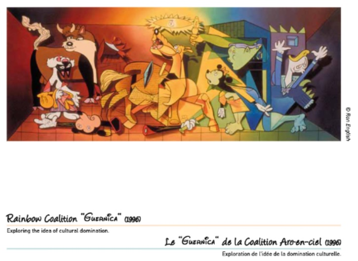

Exhibitions
Reimagining “Guernica” / La réinvention du “Guernica”, Museo de la Paz de Gernika, Gernika-Lumo, Bizkaia, Spain, April 4–December 10, 2017.
Literature
Museo de la Paz de Gernika, Reimagining “Guernica” / La réinvention du “Guernica” (Gernika-Lumo, Bizkaia, Spain: Museo de la Paz de Gernika, 2017), digital exhibition catalogue / flip-book, available here, accessed April 5, 2026.
Notes
This work references Pablo Picasso’s Guernica.
The composition incorporates characters associated with Disney and Warner Bros. / Looney Tunes.
For the 2017 Museo de la Paz de Gernika exhibition, this composition was presented as a print on stretched canvas, not as the original painting.
Ancillary Documentation
The following materials document the Picasso source reference, grouped Disney and Warner Bros. / Looney Tunes character references, and the work’s appearance in the Museo de la Paz de Gernika digital exhibition catalogue / flip-book.



Selected Online Circulation
Selected examples of the work’s online circulation, reproduction, or discussion. This list is not exhaustive; it is intended to document representative appearances of the image beyond formal exhibition and publication records.